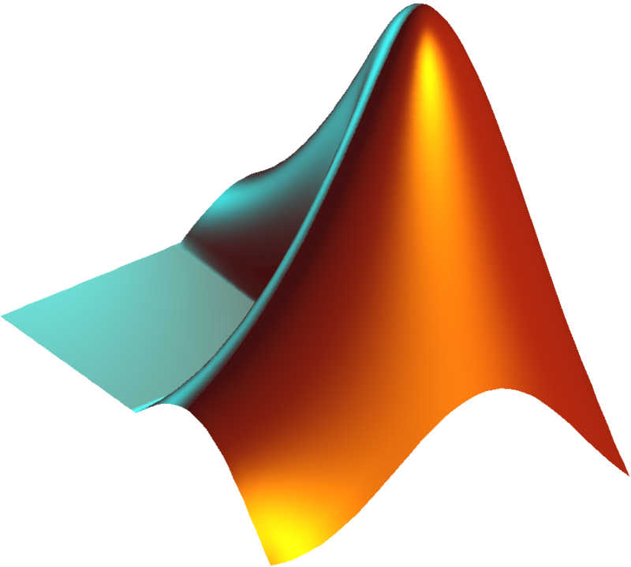

Unix/Linux |
Git |
OS |
Algorithm |
Compiler |
Database |
MOOC |
People |
||
C/C++ |
CUDA |
Java |
C# |
Python |
 MATLAB |
R |
|||
AI |
Hacking |
Web |
Miniprogram |
Pi |
App Ideas |
Excel |
|||
Tools |
Editor |
Competition |
Tools
General Community 问答社区
Search Engine 搜索引擎
- Sourcegraph: search open source repositories
- kandi: Jumpstart Application Development by finding the right Open Source resource
Editor / Online Editor 编辑器
- Squircle-CE: 开源安卓代码编辑器，在手机上开发代码
- CoderPad: Quickly Conduct Coding Interviews and Phone Screen Interviews.
- Crontab Guru: Quick and simple editor for cron schedule expressions
- Seymour: Live Programming for the Classroom
- Code share: Share code in real-time with other developers
- IDE Onlang: Write in one language and get the same result in other languages
- Pad.new: Free cloud-based IDE to run code and databases in almost any language
API Collection
Other IT Tools
- FreeFor.Dev: free resources and tools
- Repl.it: Prototyping tool
- Kody Tools: 100+ dev tools including code converters, formatters, and minifiers.
- Solid Tools for Developers: Online debugging tools
- SaaS Design: Collection of open source Figma UI design templates for your next project.
- OS Query: Easily ask questions about your Linux, Windows, and macOS infrastructure
- LaunchPad: Appollo launchepad for testing GraphQl queries
- PullRequest: Code review as a service from vetted, professional reviewers
- Python Visualizer: Watch the execution of basic Python, Java, C++, etc. code step-by-step.
- Extends Class: Online developer tools: REST and SOAP clients, SQLite browser, testers (Regex, XPath, JSONPath) and other tools (Encoders, Converters and formatters)
- maclookupMAC 地址查询
 Unix/Linux
Unix/Linux
- Linux Command
- The Linux Documentation Project
- OldLinux
- Distrotest：在线试用所有Linux系统
- Xv6: a simple Unix-like teaching operating system;
- cheat.sh: 'curl cheat.sh' instant answers on programming questions with 'curl'
- Learn UNIX in 10 minutes
- Linux Journey
- Linux Tutorial
- try: Linux 沙盒程序，让你在更改系统（比如安装程序或运行脚本）之前，先在沙盒中运行命令并检查效果
Documents
Unix/Linux Community
- Linux Forums
- Linux 中国开源社区
- LWN.net: News from the source
Vim/neoVim
- vim.org
- vimhelp
- VimGolf
- vimcasts
- Open Vim
- Vim Tutorial Videos - Flarfnoogins
- Video about vims
- Vim Cheat Sheet for Programmers
- vim.rtorr: Vim Cheat Sheet
| Vim 实用技巧 | Practical Vim: Edit Text at the Speed of Thought | [英]Drew Neil 著|杨源 车文隆 译 | 非常有用的一本书，要经常翻阅查找以逐渐熟悉这些技巧。 |
| 精通Vim：用Vim 8和Neovim实现高效开发 | Modern Vim: Craft Your Development Environment with Vim 8 and Neovim | Drew Neil | [Web] |
| Learning the vi Editor | |||
| 像IDE一样使用vim |
Bash/Shell
- Advanced Bash-Scripting Guide
- Bash Guide for Beginners
- Bash Programming
- Bash Reference Manual
- BashGuide
- Pure Bash Bible
- The Bash Guide
- The Bash Academy
- zsh: Z Shell
- Conquering the Command Line
- Commandlinefu
- Explainshell.com;
- indradhanush tutotials: Writing a Unix Shell
- Learn Shell Programming
- Unix Shell: Unix shell scripting with ksh/bash
- Learning the shell
Open Source
- N-O-D-E
- Open Hatch
- Source Forge: hosts nearly 280,000 projects.
- Google Code: free hosting for open source projects using the Subversion or Mercurial version control systems. It offers 2 GB of storage, integrated code review tools, a wiki, and an issue tracker. The Google Code site also provides links to Google's many publicly available APIs and other developer tools.
- Launch Pad: Maintained by Canonical, targeted at projects that run on Ubuntu. It provides hosting for more than 21,000 projects that use the Bazaar version control system.
- Google Open Source
- Red Hat Developer
- Open Source
- Google Summer of Code: Students work with an open-source organization on a 3-month programming project during their break from school.
- Open Source Web Design: a platform for sharing standards-compliant free web design templates.
- Mozilla Winter of Security: The Winter of Security (MWOS) is a program organized by Mozilla's Security teams to involve students with Security projects. Students who have to perform a semester project as part of their university curriculum can apply to one of the MWOS projects.
- Bit Bucket: open-source projects and private projects with fewer than five users are free.
- Media Wiki: a free software open source wiki package written in PHP, originally for use on Wikipedia. It is now also used by several other projects of the non-profit Wikimedia Foundation and by many other wikis, including this website, the home of MediaWiki.
- Code Curiosity: encourages contributions to open source. Everyone is rewarded for their efforts, no matter how big or small they are.
- Code Triage: Help out your favorite open-source projects and become a better developer while doing it.
- Issue Hub: Contribute to Open Source. Search issue labels to find the right project for you
- Up for Grabs: This is a list of projects which have curated tasks specifically for new contributors. These are a great way to get started with a project or to help share the load of working on open source projects.
- First Timers Only
- Your First PR: helps you get started contributing to Open Source by showcasing great starter issues on GitHub and elsewhere.
- Awesome First PR Opportunities
- EddieHub Open source community
- MLH Fellowship prgrammeA fully remote, 12-week internship alternative where participants earn a stipend and learn to collaborate on real open source projects with peers and engineers from top companies.
| 鸟哥的Linux私房菜：基础学习篇 [网页版] | |||
| 鸟哥的Linux私房菜：服务器架设篇 | |||
| UNIX环境高级编程 | |||
| UNIX and Linux System Administration Handbook | Evi Nemeth, Garth Snyder, Trent R. Hein, Ben Whaley, Dan Mackin | ||
| The Unix Programming Environment | Brian W. Kernighan, Rob Pike | ||
| 快乐的Linux命令行 | The Linux Command Line: A Complete Introduction | William E. Shotts, JR. | 原作中跳过没看的部分建议附到笔记中，这样就不必去翻原作了。 |
| Linux命令行与shell脚本编程大全（第3版） |
 Git
Git
- Git from the inside out
- A Hacker's Guide to Git
- Learn Git Branching
- Oh Shit, Git!?!: cheat sheet
- gitignore: 模板文件
- codeberg
- GitLab
| Pro Git：简体中文版 | Pro Git | Scott Chacon, Ben Straub | |
| GitHub入门与实践 |
C/C++
- Deep C
- C Programming
- Introduction to C Programming
- The Descent to C: for those moving to C from some higher programming language like java or python.
- C++
- C++ 17
- C++11 - the new ISO C++ standard
- Programming Community Curated C++ Resources
- How to Program in C++
Qt
| C陷阱与缺陷（第二版） | |||
| 嵌入式C语言自我修养：从芯片、编译器到操作系统 | 王利涛 编著 | ||
| C专家编程 | Expert C Programming | Perter Van Der Linden | |
| C和指针 | Pointers on C | [美]（Kenneth A. Reek）著| 译 | |
| Cocoa and Objective-C Cookbook: Move Beyond Basic Cocoa Development Using Over 70 Simple and Effective Recipes for Mac OS X Development | Jeff Hawkins | ||
| The C++ Programming Language | Bjarne Stroustrup | ||
| C++ Primer Plus（中文版） | |||
| C++ Primer（中文版） | [美]（Stanley B. Lippman） [美]（Josée Lajoie） [美]（Barbara E. Moo） 著| 译 | ||
| STL源码剖析 | 侯捷 著| 译 | ||
| Effective C++：改善程序与设计的55个具体做法（第3版） | [美]梅耶（Scott Meyers） 著|侯捷 译 | ||
| More Effective C++（中文版）: 35个改善编程与设计的有效方法 | [美]梅耶（Scott Meyers） 著|侯捷 译 | ||
| C++ Templates 中文版 | C++ Templates: The Complete Guide | [美]David Vandevoorde、[德]Nicolai M. Josuttis 著| 译 | |
| C++沉思录 | Ruminations on C++ | [美]Andrew Koenig / Barbara Moo| 黄晓春 孟岩 译 | |
| Windows程序设计（第五版） | 佩措尔德, Charles Petzold | ||
| Windows核心编程（中文第五版） | Windows via C/C++ | [美]Jeffery Richter, [法]Christophe Nasame, [译]葛子昂, 周靖, 廖敏 | 没有复制进Boox |
| 跟我一起写Makefile |
CUDA
| CUDA C 编程权威指南 | Professional CUDA C Programming | John Cheng, Max Grossman, Ty McKercher | [Code] |
| CUDA 编程：基础与实践 | 樊哲勇 著 | [Code] | |
| CUDA C++ Programming Guide | [Web] | ||
| CUDA C++ Best Practices Guide | [Web] | ||
| Learn CUDA Programming | Jaegeun Han, Bharatkumar Sharma | [Code] | |
| CUDA by Example: An Introduction to General-Purpose GPU Programming | Jason Sanders, Edward Kandrot | [Code] | |
| CUDA专家手册：GPU编程权威指南 | The CUDA Handbook: A Comprehensive Guide to GPU Programming | [美]（Nicholas Wilt） 著| 译 | |
Vulkan
MATLAB
 Python
Python
- Python Tutor;
- Pypi：Python包的管理
- Pandas：Python的一个包，用于数据分析
- Jupyter Notebook（GitHub链接）：一个很好用的Python编辑器
- Getting start with python
- Learn Python
- A Byte of Python
- Python Online Compiler: 在网页运行 Python 代码、显示运行结果的编译器，可以指定 Python 版本
- pyflo: 初学者教程
| Python基础教程（第三版） | [挪] （Magnus Lie Hetland） 著|袁国忠 译 | ||
| Python核心编程（第3版） | [美]卫斯理·春（Wesley Chun）著|孙波翔 等译 | ||
| Python网络数据采集 | Ryan Mitchell, 陶俊杰, 陈小莉 著| 译 | ||
| Python核心编程（第3版） | Core Python Application Programming (3rd edition) | [美]Wesley Chun 著|孙波翔 李斌 李晗 译 | |
| 量化交易之路：用Python做股票量化分析 | 阿布 | ||
| Python 3 网络爬虫开发实战 | 崔庆才 著 | 文件太大，暂时没有往Lumi里复制 | |
| Python极客项目编程 | Python Playground: Geeky Projects for the Curious Programmer | [美]（Mahesh Venkitachalam） 著| 译 | 2nd Edition |
 Java
Java
- Java tutorial
- Best books for learning java must read
- Java Corner at Artima.com
- Java Lecture Notes: Java Student's Resource
- Java Off Heap: Java Off the Heap house
- Java Revisited: learning Java and interview preparation.
- Java-source
- Java Visualizer: helps visualize references, values of variables, etc
- JournalDev - Java, Java EE, Android, Web Development Tutorials
- Learning Java: a free online textbook for learning Java
- The Java Memory Model
- The Java™ Tutorials
- Understanding JVM Internals
- what-is-garbage-collection
- JavaWorld
- XyzWs Java FAQs: large collection of java interview questions
- JavatPoint: basic Java programming tutorial
- Search Open Source Java API: view source of java library and learn how things are implemented.
- Deep Dive Java: Garbage Collection is Good!
- Free Online Chapters of Inside the Java Virtual Machine by Bill Venners: Java Corner
- How Garbage Collection Works
API
| Java核心技术·卷I | |||
| Java核心技术·卷II：高级特性 | |||
 Web: HTML/CSS/
Web: HTML/CSS/
- CodePen: Front End Developer Playground & Code Editor in the Browser
- 挖站否：挖掘建站的乐趣
- infinityfree: 免费网站服务器
- Docsify: 文档网站生成器: 生成文档网站，不同于 GitBook、Hexo 的地方是不会生成静态的 .html 文件，所有转换工作都是在运行时。
- UI Design Daily
- MDN Web Docs
- Tailwind CSS Page Builder: Tailwind CSS Page Builder
- Can I use: up-to-date browser support
- Flexbox Froggy: a game teaches you how to use CSS flexbox properties
- Diagrams.net: Drawing tools to make design and uml easily. Old draw.io
- Html and CSS 教程
- Auto-i18n: 使用 GitHub Actions 和 ChatGPT，将仓库里面的 Markdown 文件翻译成其他语言，适合制作网站的国际化版本
- Tianji = Website Analytics + Uptime Monitor + Server Status
- 1MB: 一个适合写小型个人网页的免费网站
HTML / CSS
Markdown
JavaScript / Typescript
- Javascript.info[中文版]
- Chrome Developer tools: Chrome的开发人员工具，完整手册 [中文版]
- ECMAScript 6 入门
- JavaScript 指南
- lodash库
- JSDoc
- Google JavaScript Style Guide
- Javascript Reference
- Well-Known Symbols: Javascript Global Symbols
- Live DOM Viewer
- CSSOM: CSS Object Model
- TypeScript 英文文档 [中文版]
- OXC: high-performance tools for JavaScript and TypeScript
JavaScript Library
JavaScript New Features
- URL.canParse(): 验证字符串是否为有效 URL
| Javascript.info Ebook Part 1 The JavaScript language | |||
| Javascript.info Ebook Part 2 Browser Document, Events, Interfaces | |||
| Javascript.info Ebook Part 3 Additional articles |
React / React Native
CSS Templates
- css loaders: 页面加载特效。
- Ant Design: 组件
- cubic-bezier: 贝塞尔曲线工具
Icon/Picture
- Flaticon: 下载免费icon
- Devicons: 图标库
- fontello: 免费图标icon下载
- iconfont: 阿里巴巴矢量图标库
- Iconscout
- LottieFiles: 动图
- useanimations：动图图标
- Dopeui: Download high quality website UI templates for designers
- Unsplash： 无版权照片
- SVG Path Editor: Online SVG Path editor
- Svgator: Animate svg graphically.
- Deviantart: 艺术作品网站
- imgur: 存储图片
- 视觉中国
Picture Editing
- 在线PS: 网页版绘图工具[英文版叫miniPaint]
Colors
Testing Tools
- Webhook.site: test and debug webhooks
- Svix Play: Webhook tester & debugger
IP
| Getting Real: The smarter, faster, easier way to build a successful web application | 37signals | [Download Link]，已经下载到了PDF。 | |
| 白帽子讲Web安全 | 吴翰清 著 | ||
| 网络黑白：学习黑客的第一本书 | 花无涯 著 | ||
| 图解HTTP | [日]上野 宣 | ||
| 图解TCP/IP（第5版） | 村山公保 & 竹下隆史 & 苅田幸雄 & 荒井透 | ||
| 图解网络硬件 | [日]三轮贤一 | ||
| 网络是怎样连接的 | 户根勤 | ||
| TCP/IP Illustrated, Vol. 1: The Protocols | W. Richard Stevens | ||
| TCP/IP Illustrated, Vol. 2: The Implementation | W. Richard Stevens | ||
| TCP/IP Illustrated, Vol. 3: TCP for Transactions, HTTP, NNTP and the Unix Domain Protocols | W. Richard Stevens | ||
| Head First Design Patterns: A Brain-Friendly Guide | Eric Freeman, Elisabeth Robson, Bert Bates, Kathy Sierra | ||
| Design Patterns: Elements of Reusable Object-Oriented Software | Erich Gamma, Richard Helm, Ralph Johnson, John Vlissides | the "Gang Of Four" book, or GOF | |
| Vue.js设计与实现 | 霍春阳（HcySunYang） | ||
| 循序渐进 Vue.js 3 前端开发实战 | 张益珲 | ||
| SVG动画：用复杂交互动画改善用户体验 | SVG Animations: From Common UX Implementations to Complex Responsive Animation | 萨拉·德拉斯纳（Sarah Drasner） | |
Miniprogram
| 微信小程序开发入门与实践 | 雷磊 | ||
| 小程序，巧应用：微信小程序开发实战 | 熊普江 谢宇华 | ||
| 小程序从0到1：微信全栈工程师一本通 | 石桥码农 | ||
| 小程序开发原理与实战 | 王贝珊 戴頔 李成熙 | ||
| 从零开始学微信小程序开发 | 高洪涛 | ||
| 微信小程序项目开发实战 | 沈顺天 | ||
| 微信小程序：开发入门及案例详解 | 李骏 边思 | ||
| 微信小程序开发零基础入门 | 周文洁 | ||
| 零基础学：微信小程序开发 | 岂超凡 | ||
| 微信小程序开发从入门到实战 | 李睿琦 梁博 | ||
| 微信小程序开发图解案例教程 | 刘刚 | ||
| 微信开发深度解析：微信公众号、小程序高效开发秘籍 | 苏震巍 | ||
| 实战微信小程序：JavaScript、WXML与Flexbox综合开发 | 荣蓉 穆心驰 何金刚 于连林 | ||
| 微信小程序开发实战 | 陈伟 | ||
| 微信小程序开发实战 | 黑马程序员 编著 | ||
 C#
C#
Lua
| Lua程序设计（第4版） | Programming in Lua | [巴西]罗伯拖·鲁萨利姆斯奇（Roberto Ierusalimschy） 著| 译 |
 R
R
 OS / Computer Organization and Design
OS / Computer Organization and Design
| CPU通识课 | 靳国杰 张戈 著 | ||
| 操作系统设计与实现 | Andrew S. Tanenbaum, Albert S. Woodhull | ||
Algorithm / Data Structure
| 算法导论（原书第3版） | [](Thomas H.Cormen, Charles E.Leiserson, Ronald L.Rivest, Clifford Stein) 著| 译 |
 Hacking
Hacking
- Indie Hacker
- 黑客说
- Common Weakness Enumeration: a community-developed list of software and hardware weakness types
- 软件漏洞数据库: 美国的国家软件漏洞数据库，收入了各种软件漏洞，以及补丁情况，方便检索
- FreeBuf
- 不安全
- 2600
- hackforums
Wireshark
| Wireshark网络分析就这么简单 | 林沛满 著 | ||
| Wireshark网络分析的艺术 | 林沛满 著 | ||
| Wireshark数据包分析实战详解 | 王晓卉 李亚伟 著 | ||
| Wireshark网络分析从入门到实践 | 李华峰 陈虹 著 | ||
| 大咖讲Wireshark网络分析 | |||
| Wireshark网络分析实战（第2版） | 甘德拉·库马尔·纳纳 尧戈什·拉姆多斯 约拉姆·奥扎赫() 著| 译 | ||
| Wireshark网络分析实战 | [以色列]约拉姆·奥扎赫（Yoram Orzach） 著| 译 | ||
| Learn Wireshark: Confidently Navigate the Wireshark Interface and Solve Real-world Networking Problems | []（Lisa Bock） 著| 译 | ||
| Mastering Wireshark | []（Charit Mishra）著| 译 | ||
| Mastering Wireshark 2: Develop Skills for Network Analysis and Address a Wide Range of Information Security Threats | []（Andrew Crouthamel） 著| 译 | ||
| Wireshark Fundamentals: A Network Engineer's Handbook to Analyzing Network Traffic | []（Vinit Jain） 著| 译 | ||
| Wireshark 101: Essential Skills for Network Analysis | Laura Chappell, Gerald Combs 著| 译 | ||
| Wireshark 2 Quick Start Guide: Secure Your Network Through Protocol Analysis | （Charit Mishra） 著| 译 | ||
| Packet Analysis with Wireshark | （Anish Nath） 著| 译 |
 Excel
Excel
| 超简单：用Python让Excel飞起来 | 王秀文 郭明鑫 王宇韬 著| 译 | ||
| Excel 2019 All-in-One For Dummies | （Greg Harvey） 著| 译 | ||
| Advanced Excel: Formulae and Calculations | （Greg Harvey） 著| 译 | ||
| Excel 2019 Power Programming with VBA | Michael Alexander, Richard Kusleika 著| 译 | ||
| Learn Microsoft Office 2019: A comprehensive guide to getting started with Word, PowerPoint, Excel, Access, and Outlook | （Linda Foulkes） 著| 译 | ||
| Python for Excel: A Modern Environment for Automation and Data Analysis | （Felix Zumstein） 著| 译 | ||
| Microsoft Excel 2019 Data Analysis and Business Modeling | （Wayne Winston） 著| 译 | ||
| Excel VBA Programming for Dummies, 6th Edition | （Dick Kusleika） 著| 译 | ||
| Excel 2019 Bible | （John Wiley） 著| 译 |
Compiler/Interpreter
- :snowman: Possibly the smallest compiler ever
- Awesome Compilers
- Growing a compiler
- Let's Build A Simple Interpreter. Part 1.
- Resources for Amateur Compiler Writers
- Structure and Interpretation of Computer Programs
- Writing My First Compiler
- An Intro to Compilers
- Write your own compiler
- Writing a C Compiler: The first post in a series by Nora Sandler on writing your own C compiler
| Crafting Interpreters | Robert Nystrom | [Web]A handbook for writing interpreters, first implementing a tree walking interpreter and later a bytecode virtual machine | |
 Database
Database
- Database of Databases: 各种数据库的资料，目前一共有900多个数据库
| SQL必知必会（第5版） | Sams Teach Yourself SQL in 10 Minutes, Fifth Edition | [美]本·福达（Ben Forta） 著|钟鸣 刘晓霞 译 | |
| MySQL必知必会 | MySQL Crash Course | [美]本·福达（Ben Forta） 著|刘晓霞 钟鸣 译 | |
| SQL学习指南（第2版） | [美]博利厄（Alan Beaulieu）著|张伟超 林青松 译 | ||
| 数据库系统概念（原书第6版） | Abraham Silberschatz, Henry F.Korth, S.Sudarshan 著| 译 | 文件太大，暂时没有往Lumi里复制 | |
| MySQL技术内幕：InnoDB存储引擎 | |||
| Redis设计与实现 | |||
| SQL语言艺术 | |||
| SQL反模式 | |||
| ZooKeeper：分布式过程协同技术详解 | |||
| 高可用MySQL（第2版） | |||
| 高性能MySQL（第3版） | |||
| Oracle高效设计 | |||
| Oracle编程艺术：深入理解数据库体系结构（第3版） | |||
| Learn SQL the Hard Way |
SEO
| SEO的艺术 | The Art of SEO: Mastering Search Engine Optimization | [美]（Eric Enge） （Stephan Spencer） （Jessie Stricchiola） （Rand Fishkin） 著|姚军 等译 |
正则表达式 Regular Expression
- regex101: Online regex tester and debugger: PHP, PCRE, Python, Golang and JavaScript
- regexr: Another online tool to learn, build & test Regular Expressions
- Regex Crossword: game
| 精通正则表达式（第3版） | [美]（Jeffrey Friedl） 著|余晟 译 | ||
| 学习正则表达式 | [美]（Michael Fitzgerald） 著|王热宇 译 |
VR/AR
 AI
AI
LLM
- LLM 可视化: 大型语言模型（LLM）原理讲解，每一步讲解都在右侧配上动画
Chatbots
- OpenAI: ChatGPT
- chatbase: 根据给定内容，自动生成聊天机器人
- openprompt: AI聊天机器人
- cloudflare-ai-web
- 图灵机器人Turing Robot
Word to Picture
- imagine: Meta 出的，目前免费
- SDXL Turbo
- DALL E 2
- Fooocus: 桌面程序，可离线生成图片
- Ai Cute Wallpapers: 免费生成/下载 AI 壁纸
- copilot
Picture to Words
- AI Image Captions: 在线工具，可以为图片生成介绍词，用于社交媒体，可以指定语言、风格和长度
Voice Clone
- clone-voice: 克隆声音
辅助编程
- Glance: Highlight important parts of the code using embeddings and PageRank.
Others
- GPTs Hunter
- yeschat: 各种AI合集
- AI Tools
- Wit AI: Natural Language for Developers
- fast.ai: Free practical *deep learning* course for coders without grad-level maths!
- TypeDB: A Strongly-typed Database
- TensorFlow: An open-source software library for Machine Intelligence
- Scikit-learn: A Python module for machine learning build on top of SciPy
- DeepLearning.ai: Deep Learning course by Andrew Ng, Founder of Coursera
- Coding the History of Deep Learning
- Serpent AI: Game Agent Framework. Helping you create AIs/Bots to play any game you own! BETA
- Blog Floydhub: Colorizing B&W Photos with Neural Networks
- MLCOURSE.AI: Open Machine Learning course by OpenDataScience
- Elements of AI: A free course for AI basics by Reaktor and University of Helsinki
- Machine Learning Mastery: blog
- Machine Learning Crash Course: A jumpstart AI course from Google
- Machine Learning Tutorial: A Step-by-Step Guide for Beginners
- Robots that learn
- Unsupervised Sentiment Neuron
- Kaggle: Machine Learning and Data Science Community
- DOBB E： 廉价开源家政机器人，通过学习人类行为学会做家务。
- Common Crawl
- Dark Visitors
- typingmind
- NextChat (ChatGPT Next Web): 一键免费部署你的跨平台私人 ChatGPT 应用, 支持 GPT3, GPT4 & Gemini Pro 模型。
- Tiny Machine Learning
| 机器学习观止：核心原理与实践 | 林学森 著 | ||
| Artificial Intelligence: A Modern Approach, 4th Edition | Stuart Russell, Peter Novig | [Web] | |
| Deep Learning for Coders with Fastai and PyTorch: AI Applications Without a PhD | Jeremy Howard, Sylvain Gugger | ||
| Computer Vision: Algorithms and Applications | Richard Szeliski | ||
| Computer Vision: A Modern Approach (Second Edition) | David A. Forsyth, Jean Ponce | ||
| Multiple View Geometry in computer vision | Richard Hartley and Andrew Zisserman | ||
| Pattern Recognition and Machine Learning | Christopher M. Bishop | ||
| Deep Learning free online book (MIT) | Link | ||
 Competition
Competition
Online Judge
- Leetcode Problems
- Online Judgment
- LightOJ
- Joyoi
- UVa
- Sphere Online Judge (SPOJ): Become a true programming master Learn how to code and build efficient algorithms
- URI Online Judge: Practice coding, Compete and be a better coder.
- 杭州电子科技大学（Online Judge）
- PKU ACM ICPC Practice problems: Judge online for ACMACPC
- algoexpert：收费的
Others
- Topic Wise Problem For Competitive Programmer
- Advent of Code: An Advent calendar of small programming puzzles
- Archived Problems: Problems Archives
- Art of Problem Solving: Is math class too easy for you? You've come to the right place!
- AtCoder: One of the best places to build competitive programming skills for beginners to experts.
- CodeChef: The only programming contests Web 2.0 platform
- CodeSignal: Test your coding skills
- CodeEval: Notepad for notes and code snippets, stored locally in the browser
- Codeforces: Programming Competition,Programming Contest,Online Computer Programming
- Codewars: Rank up by completing code kata
- Codingame: Learn coding through games and challenges!
- Facebook Hacker Cup: Facebook's Programming Contest, past problems solutions and FAQ
- Google Code Jam Practice and: past contest problems for practice
- HackerEarth: Programming challenges and Developer jobs
- HackerRank: Practice coding. Compete. Find jobs.
- Topcoder: Deliver Faster through Crowdsourcing
- WakaTime: leaderboards of coding metrics collected via editor plugins
- PrepBytes: Topic and level wise proper arrange problems
- A2OJ Ladders: Practice codeforces problems based on your proficiency and difficulty
- Codility: Verify and improve coding skills
 MOOC
MOOC
Roadmaps 技术学习路线
中文 MOOC
英文 MOOC
- Coursera.org
- edX
- Linear Algebra
- A Self-Learning, Modern Computer Science Curriculum
- hacker-tools
- Data Structure Visualizations
- atariarchives.org
- Stanford University CS Lectures [Youtube]
- Class Central
- Classpert: 多个来源的集合
- MOOC.fi: University of Helsinki
- Kadenze/Creative Programming: focused on art and creativity
- MIT OCW Electrical Engineering and Computer Science
- Computer Science Resources: list of MOOCs for autodidacts
- NPTEL: Free online courses by IIT with certificates
- prakhar1989/awesome-CS-courses: List containing large amount of CS courses
- Pluralsight: An online learning and workforce development platform that helps businesses and individuals adjust to changing technology.
- Generative AI for Beginners: 微软推出的生成式AI入门课程，共12课
- The Odin Project
- Udemy
- TeachYourselfCS
- Learn Anything: Community curated knowledge graph of best paths for learning anything
Others
- 六维空间
- 北邮人
- Rico's cheatsheets: 许多cheatsheet的合集
- Collecting all the cheat sheets
- Tails
- Kismet
- Quantum
- Thomas' Random Hackery
- 编程论坛;
- Programmer Competency Matrix: what our level as a programmer is
- 考试酷
- AnkiWeb：Anki的web端
- iamcracker：破解软件crack下载
- apkpure：一个APK安装包下载网站
- Airborn OS
| Visual Studio Code 权威指南 | 韩骏 著 |
Raspberry Pi
Watch others code
 People/Blog
People/Blog
- Paul Graham：黑客与画家/Lisp语言/YC创始人
- Philip J. Guo
- 阮一峰的网络日志 [搜索]
- robb Knight
- Coding Horror
- nownownow
- Richard Stallman's Personal Site
- dustinbrett: 在浏览器里模拟windows系统
- danluu.com;
- Stephen McCamant;
- Michael Kennedy;
- Fredo Durand;
- Andrew Ng: Machine Learning;
- Bjarne Stroustrup: C++ designer.
- timqian: 一个独立开发者，主要做网页
- Eric S. Raymond's Home Page
- 技术小黑屋
- Algo-Geeks: Programming Puzzles, Math Tricks, Algorithms, etc
- Amit Merchant: Tutorials, tips & tricks, and rants about programming and design
- Andy Heathershaw
- Antonio081014's Algorithms Codes: The world is under the RULE.
- Archives — Ask a Manager: HR-related stuff
- Armin Ronacher's Thoughts and Writings: blog on Python and open source
- blog.might.net
- CodeAhoy: Blog on software and human factors. 100% Tested on Humans.
- Brendon Gregg - Linux Kernel Dev
- Clean Coder Blog: a blog of the author of the book "Clean Code"
- CoderGears Blog Insights from: the CoderGears Team
- Coding Geek - A blog about IT, programming and Java
- CSE Blog: quant, math, computer science puzzles
- Daedtech.com: Stories about software
- Dan Dreams of Coding
- Daniel Lemire's Blog
- Eli Bendersky: everything from Python to LLVM
- HackerEarth Blog
- IT Enthusiast
- Joel on Software: CEO of StackOverflow
- Late Developer: Random thoughts of an old C++ guy
- 1ucasvb's laboriginal math and physics visualization: Lucas Vieira Barbosa's lab original math and physics visualization
- Math ∩ Programming
- My Tech Interviews: Prepare For A Technical Interview
- Programming Blog: Yegor Bugayenko
- Programming in the 21st Century
- rudhakar Rayavaram
- Runhe Tian Coding Practice: Technical interview questions from Apple, Google, Facebook, Amazon, and Microsoft
- Small Programming Challenges and Puzzles: Project Nayuki
- stevehanov.ca: I know how to make and sell software online, and I can share my tips with you.
- Takipi Blog: mainly focuses on Java and JVM languages
- The Pragmatic Engineer: Software. People. Problems. Ideas. Engineering.
- XDA - Android Developer Forum: Android Open Source Developers Forum
- The Net Ninja Web development tutorials
- Kevin London
- The Codist
- ataiva.com: 英文个人网站，有作者写的 Docker 和机器学习的系列教程
- 郭郭同学
- 安卓果酱
- geohot
- coursegraph
- robinsloan
- Power's Wiki
- Julia Evans
- Jaume Sanchez Elias: Web Dev, pixel burner - WebGL · WebXR - UX/UI
- Chad Whitacre: Head of Open Source at Sentry.
- phrack
- Sam Sam
- Max Levchin 马克斯·列夫琴
App Ideas
- florinpop17/app-ideas
- vicky002/1000-Projects
- karan/Projects
- Wrong "big projects" for beginners
- martyr2s-mega-project-ideas-list
- freeCodeCamp/React project ideas: 27 fun app ideas you can build while learning React
- Solo独立开发者社区